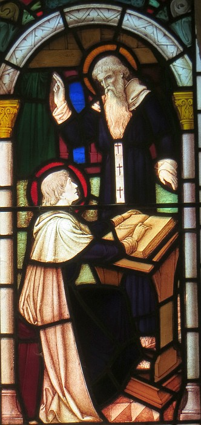

Lé dgiêx-neuf dé Janvyi est la St. Brélade, et nou-s'espéthe vaie toutes les carpéleuses transfidguthées en papillotes chu jour-là! Ch'est en tchi eune carpéleuse est l'mênom traditionnel pouor les cheins d'St. Brélade, la seule pâraisse tchi n'a raiqu'un vaîsîn. Nou n'dithait pon qu'les St. Bréladais n'aiment pon les vaîsîns, ch'est tout sîmpliément eune tchestchion d'géographie, sénon d'entonmologie.
Lé dgiêx-neuf dé Janvyi est la St. Brélade, et nou-s'espéthe vaie toutes les carpéleuses transfidguthées en papillotes chu jour-là! Ch'est en tchi eune carpéleuse est l'mênom traditionnel pouor les cheins d'St. Brélade, la seule pâraisse tchi n'a raiqu'un vaîsîn. Nou n'dithait pon qu'les St. Bréladais n'aiment pon les vaîsîns, ch'est tout sîmpliément eune tchestchion d'géographie, sénon d'entonmologie.

Ch'est seux qu'lé mouaine Branwaladr, d'la fanmil'ye rouoyale Brétonne ou Cornouaillaise à chein qu'nou dit, trouvit la beinv'nue dans la pâraisse quand i' dêbèrtchit au siêxième siècl'ye. Ch'est du nom Celtique Branwaladr qu'nou-s'a r'chu la vâriâtion Brélade – v'là tch'est pus aîsi à dithe, valet!
S'lon la légende d'la bâtithie d'l'églyise pârouaîssiale, les p'tits faîtchieaux, ieux, 'taient mains atchilyants quand nou c'menchit les fondâtions, car les pâraîssiens avaient décidé d'construithe lus templ'ye sus un site païen sâcré des p'tits faîtchieaux. Et ches p'tits faîtchieaux n'voulaient pon aver d'vaîsîns Chrêtchiens nitout, auve lus chant'tie d'cantiques et sonn'nie d'clioches. Châque matîn l's ouvrièrs r'trouvîtent lus ôtis et les matéthiaux amouoch'lés pus liain par la grève. Ayant r'halé tout, i' r'trouvîtent lé lendemain la même tureluthe. À la fîn nou décidit d'laîssi les p'tits faîtchieaux en paix en bâtissant l'églyise où'est qu'nou la vait au jour d'aniet. Nou peut dithe qu'les p'tits faîtchieaux avaient fait la preunmié objection contre eune proposition d'pliann'nie dans l'histouaithe dé Jèrri.
Jé souhaitons eune bouonne fête à touos les St. Bréladais, ès carpéleuses et ès p'tits faîtchieaux – et même ès vaîsîns. Bouonne St. Brélade!
Geraint Jennings
Viyiz étout:
{kind=link}